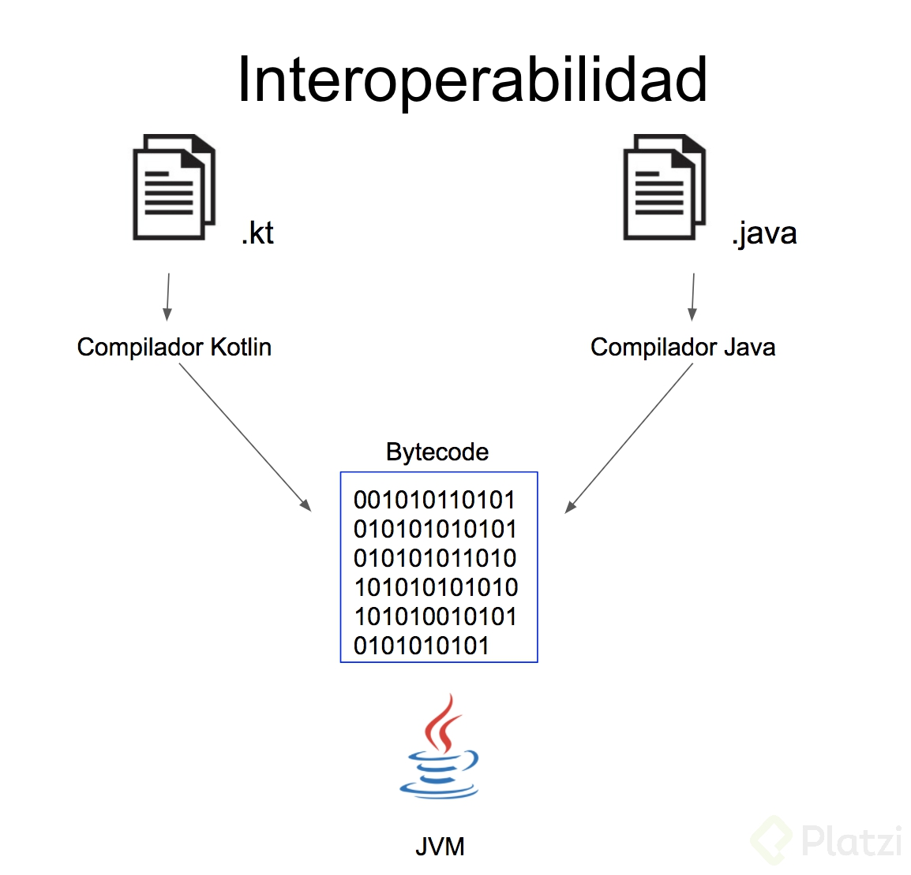

Kotlin es un lenguaje de programación de tipado estático que corre sobre la máquina virtual de Java y que también puede ser compilado a código fuente de JavaScript. Es desarrollado principalmente por JetBrains en sus oficinas de San Petersburgo (Rusia). El nombre proviene de la isla de Kotlin, situada cerca de San Petersburgo.
Kotlin fue nombrado lenguaje del mes por la revista Dr. Dobb' Journal en su edición de enero de 2012.4 Aunque no tiene una sintaxis compatible con Java, Kotlin está diseñado para interoperar con código Java y es dependiente del código Java de su biblioteca de clases, tal como pueda ser el entorno de colecciones de Java.

En julio de 2011 JetBrains reveló el Proyecto Kotlin, un nuevo lenguaje para la JVM, el cual había estado bajo desarrollo por un año. El líder de JetBrains, Dmitry Jemerov, dijo que la mayoría de lenguajes no tienen las características que buscaban, con la excepción de Scala. Sin embargo, citó el lento tiempo de compilación de Scala como una deficiencia obvia.
Uno de los objetivos establecidos de Kotlin es el de compilar tan deprisa como Java. En febrero de 2012, JetBrains liberó el código fuente del proyecto bajo la Licencia Apache 2.
Jetbrains espera que el nuevo lenguaje impulsará las ventas de IntelliJ IDEA. En 2017, recibe un importante impulso al ser nombrado por Google como lenguaje oficial para Android al mismo nivel que Java.
Al igual que Pascal, Haxe, PL/SQL, F#, Go y Scala —y a diferencia de C y sus derivados como C++, Java, C#, y D— la declaración de variables y listas de parámetros en Kotlin tienen el tipo de dato después del identificador y un separador de dos puntos. Igual que en otros lenguajes modernos como Scala y Groovy, los puntos y comas son opcionales como final de sentencia; en muchos casos un salto de línea es suficiente para que el compilador pueda deducir que la declaración terminó.
Además de clases y métodos (en Kotlin se llaman funciones miembro) clásicos de la programación orientada a objetos, Kotlin también soporta programación por procedimientos y el uso de funciones.
Igual que en C y C++, el punto de entrada a un programa Kotlin es una función llamada "main", que recibe un array que contiene los argumentos pasados desde la línea de comandos. Soporta la interpolación de variables dentro de cadenas de texto al estilo de los shell scripts de Perl y Unix/Linux. La inferencia de tipos es otra de las características de Kotlin.
Kotlin opera sobre la JVM (Java Virtual Machine), es decir que con toda tranquilidad podemos trabajar con archivos que tengan las dos extensiones .kt para archivos de Kotlin y .java para archivos de Java.
El IDE (el entorno de desarrollo) con el que estamos trabajando pasa cada uno de estos archivos por su compilador correspondiente, generando como resultado bytecodes es decir archivos que procesa la JVM o cualquier máquina que esté basada en máquina virtual, así que para la JVM es totalmente transparente el lenguaje con el que estás trabajando.
Subir ariba.